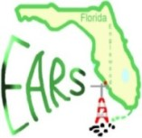

Englewood Amateur Radio Society (EARS)

Training
One club objective is to promote the hobby of amateur
radio through training people for their first Ham Radio FCC License, and training existing
license holders for license upgrades. To do this the club periodically conducts training sessions.
For the upcoming training activities contact the club, view the calander and Facebook links below or view the Facebook page for training announcements.